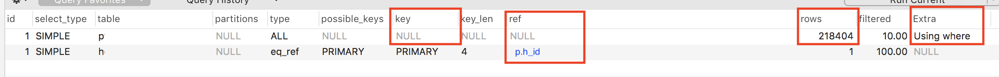

<!DOCTYPE html>
<html xmlns="http://www.w3.org/1999/xhtml" xml:lang="en-us" lang="en-us">
<head>
  <link href="//gmpg.org/xfn/11" rel="profile">
  <meta http-equiv="content-type" content="text/html; charset=utf-8">
  <meta name="generator" content="Hugo 0.80.0" />

  
  <meta name="viewport" content="width=device-width, initial-scale=1.0">

  <title>Add Proper Index Table For Slow Query MYSQL &middot; Ridha R</title>

  
  <link type="text/css" rel="stylesheet" href="https://ridhar.com/css/print.css" media="print">
  <link type="text/css" rel="stylesheet" href="https://ridhar.com/css/poole.css">
  <link type="text/css" rel="stylesheet" href="https://ridhar.com/css/syntax.css">
  <link type="text/css" rel="stylesheet" href="https://ridhar.com/css/hyde.css">
    <link rel="stylesheet" href="https://fonts.googleapis.com/css?family=Abril+Fatface|PT+Sans:400,400i,700">


  
  <link rel="apple-touch-icon-precomposed" sizes="144x144" href="/apple-touch-icon-144-precomposed.png">
  <link rel="shortcut icon" href="/favicon.png">

  
  <link href="" rel="alternate" type="application/rss+xml" title="Ridha R" />

  
</head>

  <body class=" ">
  <aside class="sidebar">
  <div class="container sidebar-sticky">
    <div class="sidebar-about">
      <a href="https://ridhar.com/">
        <h1>Ridha R</h1>
      </a>
      <p class="lead">
         blogs &amp; thoughts 
      </p>
    </div>
    <nav>
      <ul class="sidebar-nav">
        
        <li><a href="/about/"> About Me </a></li><li><a href="/ridhar-studio/"> Ridhar Studio </a></li>
      </ul>
    </nav>

    <nav>
      <div>Tags</div>
      <div style="display: flex;flex-wrap:wrap;">
         
        
        <div class="tagbutton"
          style="
            font-size: smaller; flex: 0 1 auto;margin-right: 8px;
            border-radius: 4px;
            background-color: whitesmoke;
            padding: 1px 3px 1px 3px;
            color: black;
            margin-bottom: 3px;
            ">
          <a href='/tags/clean-code/' title="All pages with tag clean-code"
            style="color: black;"
          >clean-code</a>
          
          (3)
        </div>
        
         
        
        <div class="tagbutton"
          style="
            font-size: smaller; flex: 0 1 auto;margin-right: 8px;
            border-radius: 4px;
            background-color: whitesmoke;
            padding: 1px 3px 1px 3px;
            color: black;
            margin-bottom: 3px;
            ">
          <a href='/tags/mysql/' title="All pages with tag mysql"
            style="color: black;"
          >mysql</a>
          
          (1)
        </div>
        
         
        
        <div class="tagbutton"
          style="
            font-size: smaller; flex: 0 1 auto;margin-right: 8px;
            border-radius: 4px;
            background-color: whitesmoke;
            padding: 1px 3px 1px 3px;
            color: black;
            margin-bottom: 3px;
            ">
          <a href='/tags/object-oriented/' title="All pages with tag object-oriented"
            style="color: black;"
          >object-oriented</a>
          
          (3)
        </div>
        
         
        
        <div class="tagbutton"
          style="
            font-size: smaller; flex: 0 1 auto;margin-right: 8px;
            border-radius: 4px;
            background-color: whitesmoke;
            padding: 1px 3px 1px 3px;
            color: black;
            margin-bottom: 3px;
            ">
          <a href='/tags/software-architecture/' title="All pages with tag software-architecture"
            style="color: black;"
          >software-architecture</a>
          
          (1)
        </div>
        
        
      </div>
    </nav>
    <br/>
    <p>
      <iframe data-aa="1611454" src="//acceptable.a-ads.com/1611454" scrolling="no" style="border:0px;padding:0;width:100%;height:100%;overflow:hidden" allowtransparancy="true">
      </iframe>
    </p>
    <p>
      &copy; 2021. All rights reserved. 
    </p>
</aside>

    <main class="content container">
    <div class="post">
  <h1>Add Proper Index Table For Slow Query MYSQL</h1>
  <time datetime=2021-01-13T05:02:45&#43;0700 class="post-date">Wed, Jan 13, 2021</time>
  <p>For software engineer especially on the backend, might have faced issue slow query in the Production environment.
This happens when the query that builds in the development environment only has small data set and shows good query time.
Maybe first-time query landing on production environment everything just fine, just like a time bomb, production dataset getting bigger and the query time is slowing down and your alert system notifies you for the slow query, or database CPU got high. If you are unlucky (don&rsquo;t have a good alert system) and your boss will alert you and it is time for you to hurry and hotfix.</p>
<p>If you have identified the problem slow query, the quick solution is to add more indexes to the related table. Adding more index comes with a cost, it is affect writing performance. But at that time it is your quickest fix you can take.</p>
<p>If you are guessing when decide which columns table to be added and your database are MYSQL, you might try <code>EXPLAIN</code> command of MYSQL to get insight into what your query did. Here a quick example of how <code>EXPLAIN</code> command will help you.</p>
<p>You have found this query is slow in your production database.</p>
<pre><code>SELECT h.*
FROM h INNER JOIN p ON h.id = p.h_id
WHERE p.d_id = 26356
</code></pre><p>This query takes for (Hold your comment I know its consider a fast query but you will see the difference next)</p>
<p></p>
<p>Then you can run <code>EXPLAIN</code> before your query</p>
<pre><code>EXPLAIN SELECT h.*
FROM h INNER JOIN p ON h.id = p.h_id
WHERE p.d_id = 26356
</code></pre><p>And you will get this</p>
<p></p>
<blockquote>
<p>Details explanation of output of command <code>EXPLAIN</code> you will get in here <a href="https://dev.mysql.com/doc/refman/5.6/en/explain-output.html">https://dev.mysql.com/doc/refman/5.6/en/explain-output.html</a></p>
</blockquote>
<p>See red mark on column <code>key</code> and the first row, it means your query look over table <code>p</code> without index, identified by <code>null</code> value.
Then you see a red mark on column <code>rows</code> and the first row, for <code>p</code> table MySQL do examine <code>218404</code> row in the table, this is total data in table <code>p</code>. And on <code>Extra</code>, it tells that examines <code>p</code> table is using where condition not index.</p>
<p>And you need to see a red mark on columns <code>ref</code> and the second row and this is what you are looking at. This is the table column that you need to add the index. In this example I add index for column <code>p.h_id</code> with index name <code>idx_h_id</code>.</p>
<p>If in your case the value of <code>ref</code> is you think is not relevant, you need to decide by yourself which column to add a new index to reduce the high value of <code>row</code>. The lower number of <code>row</code> will faster your query.</p>
<p>Now if I run <code>EXPLAIN</code> again the result will be like this.</p>
<p></p>
<p>See the <code>row</code> value decrease from <code>218404</code> to <code>10</code> and on table <code>p</code> row the new index <code>idx_h_id</code> is used in the query process.
And the query time is faster now. On <code>Extra</code> it tells that <code>p</code> table is now using index while scanning.</p>
<p></p>
<p>Hope it helps you! Put your comment below.</p>

  <h3>Tags</h3>
  
      <a href="https://ridhar.com/tags/mysql/">mysql</a>
  
</div>
<h2>Comments</h2>
<div id="disqus_thread"></div>
<script type="application/javascript">
    var disqus_config = function () {
    
    
    
    };
    (function() {
        if (["localhost", "127.0.0.1"].indexOf(window.location.hostname) != -1) {
            document.getElementById('disqus_thread').innerHTML = 'Disqus comments not available by default when the website is previewed locally.';
            return;
        }
        var d = document, s = d.createElement('script'); s.async = true;
        s.src = '//' + "ridhar-com" + '.disqus.com/embed.js';
        s.setAttribute('data-timestamp', +new Date());
        (d.head || d.body).appendChild(s);
    })();
</script>
<noscript>Please enable JavaScript to view the <a href="https://disqus.com/?ref_noscript">comments powered by Disqus.</a></noscript>
<a href="https://disqus.com" class="dsq-brlink">comments powered by <span class="logo-disqus">Disqus</span></a>
    </main>

    
<script type="application/javascript">
var doNotTrack = false;
if (!doNotTrack) {
	window.ga=window.ga||function(){(ga.q=ga.q||[]).push(arguments)};ga.l=+new Date;
	ga('create', 'UA-128028156-1', 'auto');
	
	ga('send', 'pageview');
}
</script>
<script async src='https://www.google-analytics.com/analytics.js'></script>

  </body>
</html>
